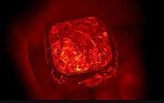

Kriptonitas

- Esta es la mas famosa y es la que lo debilita hasta el borde de la muerte a los kriptonianos.

- Le quita los poderes a un kriptoniano para siempre.

- Esta puede frenar los efectos de la verde, pero le quita los poderes de kriptoniano temporalmente (Causa el mismo efecto en Bizarro que la verde en Superman).
- No le hace nada a los kriptonianos, pero es la única kriptonita pura que mata a toda la naturaleza terrestre si la toca. (Es casi inexistente).

- Fue creada en un laboratorio y divide a las personas y kriptonianos en dos partes (Bueno y malo).

- Fue creada por Brainiac para hacerle creer a Superman que el era su amigo. Es que un alucinógeno que provoca que pueda penetrar en su mente sin problema.

- Esta le quita los sentimientos de verdad y justicia y provoca que se vuelva malo y no sea consciente del mal que hace mientras tenga una cerca.

- Provoca que los kriptonianos cambien su sexualidad.